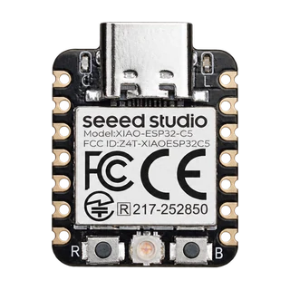
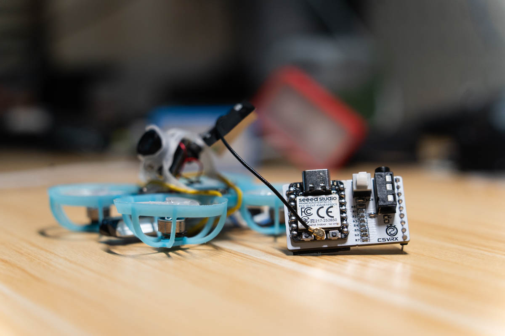
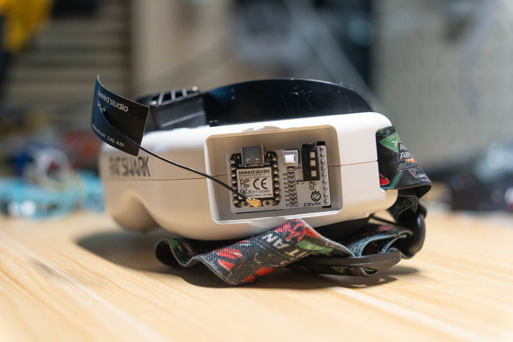
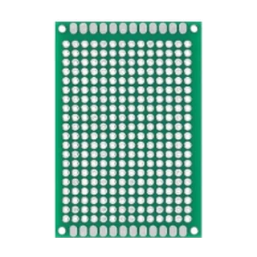
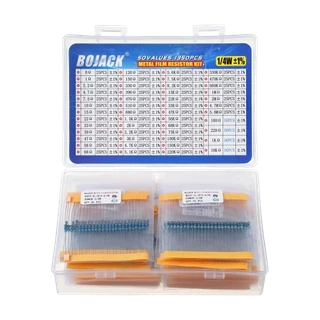
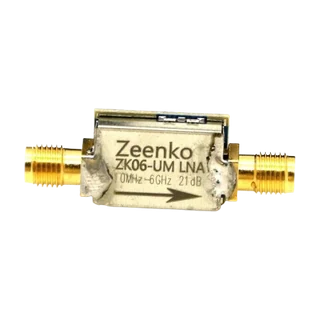
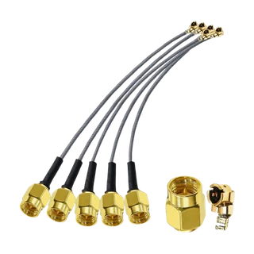

XIAO ESP32-C5
The receiver itself: Seeed Studio’s ESP32-C5 board with an IPX antenna connector.
Buy on Amazon Buy from SeeedBuild your own 5.8 GHz analog FPV receiver with an ESP32-C5. Six resistors connected to its GPIO pins make the AV video output. Build it on perfboard or get a ready-made module, flash the firmware over USB and connect your goggles or monitor.
Video or sync can disappear without warning. Loss of FPV video can lead to a crash, property damage or serious injury. Do not rely on C5VRX as your only means of maintaining safe aircraft control.
No warranty: the firmware is provided under GPL-3.0-only, including its warranty and liability provisions in sections 15–17, to the extent permitted by applicable law. This warning does not replace those terms or limit rights that cannot legally be excluded.
See the README and the evidence documented for your exact build.
Drag & drop a firmware binary (.bin) here
or0x0 for a merged image, 0x10000 for an application binary.
hwx.h. Not for goggles or flight. Flash a normal C5VRX-5 build to go back.
No device connected
Use a USB data cable to connect your XIAO ESP32-C5 and choose its serial port when connecting.
A running C5VRX-5 receiver enters download mode by itself. If connecting still fails, hold BOOT, tap RESET, then release BOOT.
Close the Terminal (or any other serial program) first: only one program can use the port.
Connect a C5VRX-5 receiver over USB to use its menu.
Test on the ground. Live VTX matching changes only the analog filter. Live OUTPUT, decoder, filter and profile changes are verified restarts and share a five-second firmware cooldown. Further experiments (AUTO OUTPUT, STRONG LANE, LOW DC, the D10 sample clock and more) are in the goggles under EXPERIMENTAL; the menu shows EXP while any of them is not on its default.
The receiver records every session by itself: picture quality, verified output identity, native sync coverage, gain, DC, temperature, events and raw IQ at the worst moments (about 4 hours, oldest overwritten first). Read it after a flight; the receiver keeps running while it is read.
| Session | Length | Picture | SNR median / worst | Signal median / weakest with picture | Verified demod / level | Native H lock / observer coverage | Repairs / longest H unlock | Dropouts | Worst DC | Max temp | Deviation | Track / edge / recover | Main impairment | Reset | Firmware |
|---|
picture SNR (dB) gain index / 4 DC (cells x 5) temperature (°C / 4) signal at the chip ((dBm + 100) / 2) native H lock (% / 4) dropout
Connect a receiver to view serial output.
Keys are case-sensitive and send one byte without Enter; h lists them. The log keeps the latest 120,000 characters.
Connecting the terminal releases the flasher and the other way round; they never share the port. The menu updates by itself while the receiver is connected.
Two ways to a C5VRX receiver: buy a ready-made module, or build your own from a XIAO ESP32-C5 and six resistors. Both run the same firmware from the USB web flasher.
Option 1 · Ready-made



FPVGate sells a ready-made C5VRX receiver module. Flash it with the USB web flasher and connect your goggles or monitor. Check the shop for what is included.
Buy from FPVGateFPVGate is an independent third-party seller. Send questions about orders, shipping, payment, returns or the module hardware to FPVGate, not to the C5VRX project.
Option 2 · Build it yourself
Solder one resistor to each of six GPIO pins, join the other ends and add 200 Ω to GND. The wiring guide lists the pins and values.

The receiver itself: Seeed Studio’s ESP32-C5 board with an IPX antenna connector.
Buy on Amazon Buy from Seeed
Holds the XIAO and the resistor network.
Buy on Amazon
An assortment for the six DAC resistors and the 200 Ω load; check the values against the wiring guide.
Buy on AmazonOptional · More range
A low-noise amplifier between the antenna and the XIAO, tested with the Zeenko ZK06-UM. Wire antenna → LNA → pigtail → the XIAO’s IPX connector. No setting is needed: the firmware measures its own noise and adapts its gain. See the LNA notes.

10 MHz–6 GHz, SMA. Datasheet at 5.8 GHz: ~22.6 dB gain, ~1.0 dB noise figure.
Buy on Amazon
Connects the LNA output to the XIAO’s IPX (U.FL) antenna connector.
Buy on AmazonAmazon links are affiliate links. As an Amazon Associate, I earn from qualifying purchases. All affiliate earnings go back into C5VRX development. The FPVGate and Seeed Studio links are not affiliate links.
A Seeed Studio XIAO ESP32-C5, six resistors for the GPIO pins, one 200 Ω resistor to GND, an antenna and a connection to your goggles’ or monitor’s AV input. Perfboard makes assembly easier. A ready-made receiver module is also available from an independent seller. Follow the wiring guide for the pins, resistor values and connections.
C5VRX is designed for 5.8 GHz analog FM FPV video and composite PAL/NTSC output. Check the documented camera, goggles and monitor tests for your exact firmware build; compatibility is experimental.
Yes. Connect the receiver with a USB data cable and use a desktop browser with Web Serial, such as Chrome or Edge. The web flasher offers published firmware builds and local binary files. The flashing guide also documents the command-line workflow.
C5VRX is experimental. Passing tests or installing a versioned release does not establish flight safety or guarantee range. Read the safety and warranty disclaimer, complete calibration and ground-test every firmware and hardware/settings combination.
C5VRX turns an ESP32-C5 into a 5.8 GHz analog FPV video receiver. It is an open-source project by Twotoz and the C5VRX contributors.
The basic idea is simple: solder one resistor to each of six GPIO pins, then join the other ends together. That connection is your AV video output for analog goggles or a monitor. Follow the hardware section and ground-test your setup.
Build it yourself on perfboard, or get a ready-made receiver module. For a perfboard build, start with a Seeed Studio XIAO ESP32-C5 and the six GPIO resistors. Add a 200 Ω resistor from the joined output to GND, and connect your goggles’ or monitor’s video input and ground. The wiring guide shows exactly which pins and resistor values to use. Then install the firmware with the USB web flasher.
The receiver runs and holds video on the test boards; its range has not been measured yet.
The C5VRX GitHub repository includes GPL-3.0-only firmware, schematics, host tests and documented experiments. Read the receiver findings for the evidence and limits of each change, or join the project’s Discord from the link above to share builds and test results.